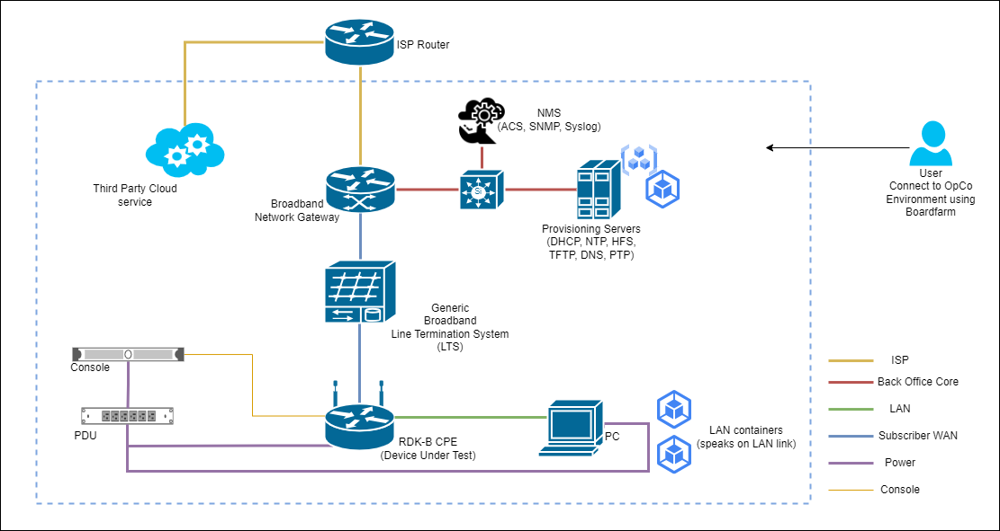

Boardfarm


Boardfarm is an open-source IT automation framework purely written in Python (3.11+).
Its primary focus revolves around systems configuration, infrastructure deployment, and orchestration of advanced IT tasks such as Subscriber Provisioning, Line Termination System bootups (LTS) or a CPE firmware flash via bootloader.
It empowers its users with the ability to automate and comprehensively test their devices across a wide range of target environments.
Motivation
Boardfarm was initially developed at Qualcomm to automate testing of OpenWrt routers and other embedded devices.

Over time, the framework evolved to support RDK-B derived boards and IoT devices, along with the essential OSS and back-office components necessary for simulating a Telecom Service Providers' environment.

The operation of a device or the configuration of a server can vary depending on the specific hardware variant or the infrastructure layout of the deploying Telecom Operator.
To address this variability, Boardfarm utilizes Pluggy to introduce a hook structure that enables its users to register customized code through plugins for each individual infrastructure component.
This structure also enforces a uniform API specification, allowing plugins to invoke their implementation at any of the predefined checkpoints within the Boardfarm's execution cycle, offering flexibility and extensibility.
Features
- Modular Hook definitions enabling users to independently initiate the bootup/deployment process for each component within the infrastructure, offering granular control and flexibility.
- Seamless integration with Pytest. Provides easy access to devices along with their pre-set operations through protocol-specific libraries.
- A versatile connection manager that abstracts physical device connections, offering a unified set of APIs for RS232, SSH, Telnet, SNMP, and HTTP(s) communication with the infrastructure.
- A library of device templates (Python ABCs) that can be inherited and customized for implementing hardware interactions without application or server specific constraints.
- A plugin architecture that enables vendors and OEMs to perform testing and provisioning on their firmware builds/devices, whether in a predefined production or fully simulated test environment.
- Integration with Docker/QEMU to simulate various test environments and devices.
Installation
Run the following command to directly install the package from the repo:
pip install git+https://github.com/lgirdk/boardfarm.git@boardfarm3
Usage
boardfarm -h
This will display help for the framework. Here are all the switches it supports.
usage: boardfarm [-h] --board-name BOARD_NAME --env-config ENV_CONFIG --inventory-config INVENTORY_CONFIG [--legacy] [--skip-boot] [--skip-contingency-checks] [--save-console-logs]
options:
-h, --help show this help message and exit
--board-name BOARD_NAME
Board name
--env-config ENV_CONFIG
Environment JSON config file path
--inventory-config INVENTORY_CONFIG
Inventory JSON config file path
--legacy allows for devices.<device> obj to be exposed (only for legacy use)
--skip-boot Skips the booting process, all devices will be used as they are
--skip-contingency-checks
Skip contingency checks while running tests
--save-console-logs Save console logs to the disk
Documentation
For full documentation, including installation, tutorials and architecture overview and how to run a prplOS demo with a CPE, ACS, lan, wan devices, please see the following.
Table of Contents
Changelog
Consult the CHANGELOG page for fixes and enhancements of each version.
License
Distributed under the terms of the Clear BSD License, Boardfarm is free and open source software.